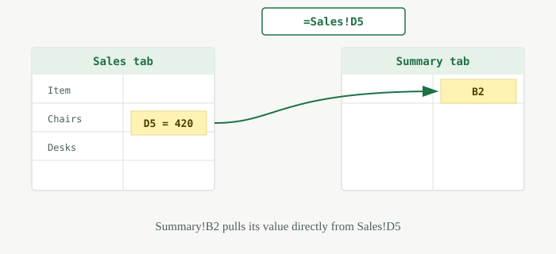

How to Refer to a Cell in Another Tab in Google Sheets
If your data is spread across multiple tabs — say, a "Sales" tab and a "Summary" tab — you don't need to copy and paste values back and forth every time something changes. Google Sheets lets you refer to a cell in another tab with a simple formula, so the data updates automatically whenever the source changes. In this guide, you'll learn the basic formula, see a full step-by-step example, and find out how to fix the most common errors people run into.
Basic Formula for Referencing Another Tab
The formula for referencing a cell in another tab follows this pattern:
=SheetName!CellReference
Here's what each part means:
- = — every formula in Google Sheets starts with an equals sign
- SheetName — the exact name of the tab you want to pull data from
- ! — the exclamation point separates the sheet name from the cell reference
- CellReference — the specific cell you want to pull, like A1 or B5
For example, if you want to pull cell A1 from a tab named "Sales," the formula would be
=Sales!A1.
Step-by-Step Example
Let's say you have a tab called Sales with monthly numbers, and a tab called Summary where you want those numbers to appear automatically.
Referencing a Single Cell
- Open your Google Sheets file and go to the Summary tab.
- Click the cell where you want the data to appear (for example, B2).
- Type an equals sign:
= - Click the Sales tab at the bottom of the screen.
- Click the cell you want to pull, for example D5.
- Press Enter.

Google Sheets writes the formula for you automatically — in this case=Sales!D5 — and the value updates instantly if the source cell changes.
Referencing a Range of Cells
You can also pull an entire range instead of a single cell. For example, to bring in all sales figures from D2 to D10 on the Sales tab:
=Sales!D2:D10
Type this formula into the starting cell on your Summary tab, and Google Sheets will automatically fill in the referenced range below it.
What If the Sheet Name Has Spaces?
If your tab name contains spaces or special characters — like "Sales Data" instead of "Sales" — wrap the sheet name in single quotes. Otherwise, Google Sheets won't know where the sheet name ends and the cell reference begins.
='Sales Data'!D5
A simple habit that avoids this issue entirely: name your tabs without spaces (for example, "SalesData" or "Sales_Data") whenever you can.
Common Errors and How to Fix Them
#REF! Error
This error appears when the tab or cell you're referencing no longer exists — usually because the sheet was deleted or renamed. To fix it, check that the sheet name in your formula matches an existing tab exactly, then update the reference.
Typo in the Sheet Name
A common mistake is misspelling the tab name or forgetting the single quotes around names with spaces. Sheet names in formulas aren't case-sensitive, but they do need to match exactly otherwise, including spaces and punctuation.
Bonus: Referencing a Cell in a Completely Different Spreadsheet
Everything above works when both tabs live in the same spreadsheet file. If you need to pull data from a completely separate Google Sheets file, you'll need a different function called IMPORTRANGE, which requires granting access between the two files. That's a bigger topic on its own — we'll cover it in a future article.
Referencing cells across tabs is one of the most useful habits to build in Google
Sheets. Once you're comfortable with the basic =SheetName!CellReference
pattern, you can start connecting dashboards, summaries, and reports so they update
automatically — no more manual copy-pasting. Try it on one of your own spreadsheets and
see how much time it saves.
Frequently Asked Questions
Can I reference a cell from a completely different spreadsheet?
Not with this basic formula — you'll need the IMPORTRANGE function instead, which requires granting access between the two files.
Does the formula update automatically if I edit the source cell?
Yes. Since the formula is a live reference, not a copied value, it updates instantly whenever the original cell changes.
What happens if I delete the tab I'm referencing?
The formula will show a #REF! error, since the cell it points to no longer exists. You'll need to update the reference manually.